Bienvenue !
Pierre-Julien VILLOUD
Introduction
Le principe de persistence décrit le fait de pouvoir stocker sur un support durable les données manipulées par une application et ainsi :
- Eviter que les données disparaissent lorsque le programme se termine
- Communiquer par l'intermédiaire des données avec d'autres applications
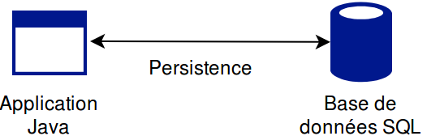
Nous allons ici parler de persistence dans une base de données relationnelle de type SQL.
JDBC
JDBC (pour Java DataBase Connectivity) est le standard proposé nativement par Java pour accéder aux base de données. Il permet depuis une application Java de se connecter à un SGBD afin d'envoyer des requêtes SQL et récupérer les données éventuellement retournées.

Chaque SGBD étant différent, il est nécessaire d'utiliser un driver implémentant le standard pour se connecter à tel ou tel SGBD. Tous les SGBD majeurs proposent un driver JDBC.
Se connecter à une BDD
Pour se connecter à la BDD avec JDBC, on doit créer un objet
Connection en lui fournissant les informations nécessaires à la connexion.
String url = "jdbc:mysql://localhost:3306/mabase";
String user = "root"; String pwd = "root";
java.sql.Connection connexion = null;
try {
connexion = java.sql.DriverManager.getConnection(url, user, pwd);
//L'object connexion va nous permettre d'effectuer des requêtes...
...
} catch ( java.sql.SQLException e ) {
//Problème de connexion à la base !
}
//Lorsqu'on a fini de l'utiliser :
if(connexion != null) {
try {
connexion.close();
}
catch ( java.sql.SQLException e ) {
//Problème de déconnexion, ce n'est pas très grave...
}
}
En fonction de l'URL passée, JDBC décide quel driver il doit charger (ici MySQL). Pour qu'il puisse y accéder, il est nécessaire de l'ajouter au classpath ou d'utiliser un gestionnaire de dépendance (ex : Maven).
Exécuter une requête SELECT
A partir de l'objet
Connection, on va créer un objet de type Statement pour créer une requête, puis un objet ResultSet pour traiter les résultats.
//La variable de type Statement permettra de gérer des requêtes SQL
Statement statement = connexion.createStatement();
//La variable de type ResultSet contiendra les résultats de la requêtes
String query = "SELECT id, marque, modele, date_mise_circulation FROM vehicule";
ResultSet resultSet = statement.executeQuery(query);
//On parcours un à un les résultats grâche à next() qui renvoie un booléen
//précisant s'il y a une ligne suivante dans nos résultats et récupère ce
//résultat le cas échéant (au début, son curseur est situé avant le premier élément).
while(resultSet.next()){
System.out.println("Identifiant : " + resultSet.getInt("id"));
System.out.println("Marque : " + resultSet.getString("marque"));
System.out.println("Modèle : " + resultSet.getString(3));
System.out.println("Date MC : " + resultSet.getDate("date_mise_circulation"));
System.out.println("? : " + resultSet.getBoolean("inconnu"));//SQLException
}
Toutes les méthodes présentées ci-dessus lèvent potentiellement une exception. Il est donc nécessaire de les mettre à l'intérieur de
try catch ou de propager l'exception avec un throws au niveau de la méthode.
Exécuter une requête UPDATE, DELETE ou INSERT
La syntaxe est différente puisqu'il n'y a pas de notion de résultat pour ces requêtes. On utilise la méthode
executeUpdate().
Statement statement = connexion.createStatement();
String query = "INSERT INTO vehicule(marque, modele) VALUES ('Peugeot', '208')";
int status = statement.executeUpdate(query);//nombre de lignes insérées
query = "DELETE FROM vehicule WHERE marque = 'Renault'";
status = statement.executeUpdate(query);//nombre de lignes supprimées
query = "UPDATE FROM vehicule SET marque = 'Lada' WHERE marque = 'LADA'";
status = statement.executeUpdate(query);//nombre de lignes mises à jour
De la même manière la méthode
executeUpdate peut lever une exception, il est donc nécessaire de la gérer.
Requêtes dynamiques
La notion de requête dynamique permet d'exécuter des requêtes avec des paramètres qui varient à l'exécution. Il y a plusieurs manières de faire cela.
//Soient les variables marque et modele contenant
//des valeurs renseignée par l'utilisateur
String query = "SELECT * FROM vehicule WHERE marque = '" +
marque + "')";
statement.executeQuery(query);//OK !
//Que se passe-t-il si modele vaut "test' OR '1' = '1" ?
//La solution ? Les Prepared Statements
String queryPrep = "SELECT * FROM vehicule WHERE marque = ? AND modele = ?)";
PreparedStatement statement = connexion.prepareStatement(queryPrep);
statement.setString(1, marque);
statement.setString(2, modele);
statement.executeQuery();
Les
PreparedStatement permettent de paramétrer la requête de manière plus fiable, de protéger la requête en échappant les valeurs des paramètres et d'augmenter les performances lors d'utilisations multiples grâce à la pré-compilation.
Avantages/Inconvénients
L'utilisation de
JDBC présentent des avantages et des inconvénients.
- Contrôle
- Au plus prêt du SGBD
- Performances
- Récupération des résultats pas pratique
- Totalement dépendant du SGBD
- Tres verbeux
- Gestion manuelle des connexions fastidieuse
- Maintenabilité et évolutivité
On utilisera JDBC lorsqu'il y a des vrais problématiques de performances ou lorsqu'on doit faire appel à des procédures stockées par exemple. Pour les autres cas, on utilisera plutôt
JPA.
JPA et Hibernate
JPA pour Java Persistence API est un standard de JEE permettant notamment de faire correspondre des classes Java avec des tables de base de données (c'est ce qu'on appelle ORM pour Object-Relational Mapping). Hibernate est une implémentation de ce standard et s'appuie sur JDBC pour dialoguer avec la base de données.

Il existe d'autres implémentations de JPA (EclipseLink, OpenJPA...) mais Hibernate reste la plus utilisée. A noter que chaque framework propose des fonctionnalités supplémentaires par rapport à JPA.
Les Entités
Les Entités sont donc des classes Java qui seront utilisées pour mapper les données issues d'une table afin de pouvoir gérer plus facilement les données et tirer partie de la puissance de la POO.
import javax.persistence.*;
@Entity
@Table(name = "vehicule")
public class Vehicule {
@Id
@GeneratedValue(strategy = GenerationType.IDENTITY)
private Integer id;
@Column(name = "marque")//superflu car noms identiques
private String marque;
private String modele;
private String immatriculation;
@Column(name = "date_mise_circulation")
private Date dateMiseCirculation;
}
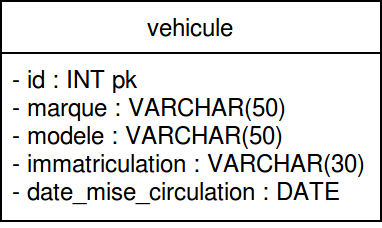
Nous avons maintenant un object
Vehicule prêt à être automatiquement rempli avec les données issues de la table vehicule.
Spring
Les Repository (ou DAO : Data Access Object) permettent de séparer l'accès aux données dans une couche spécifique et ainsi limiter les actions sur la base en exposant uniquement les méthodes nécessaires. On ne peut plus faire n'importe quoi comme avec JDBC. On va ajouter un framework qui va nous simplifier la vie : Spring.

Nous n'allons utiliser que Spring Boot et Spring Data dans le framework Spring (ce framework devrait vous être présenté lors d'un prochain cours).
Les Repository
Les
Repository vont nous permettre d'accéder et de manipuler les données :
- En fournissant des méthodes toute prêtes
- En permettant de générer des requêtes sans écrire une ligne de SQL
- En proposant des fonctionnalités de pagination
- En permettant d'écrire des requêtes en pseudo-langage SQL
- En permettant d'écrire des requêtes en SQL natif
Pour cela, nous utiliserons l'interface
JpaRepository de Spring Data.
JpaRepository
Il suffit de créer une interface pour l'entité voulue (Ex :
MonEntiteRepository) est la faire implémenter JpaRepository.
public interface JpaRepository<T, ID> extends PagingAndSortingRepository<T, ID> {
<S extends T> S save(S entity);
<S extends T> List<S> saveAll(Iterable<S> var1);
Optional<T> findById(ID id);
T getOne(ID var1);
List<T> findAllById(Iterable<ID> var1);
List<T> findAll();
boolean existsById(ID id);
long count();
void deleteById(ID id);
void delete(T entity);
void deleteAll(Iterable<? extends T> entities);
void deleteAll();
//...
}
//Fichier VehiculeRepository.java
public interface VehiculeRepository extends JpaRepository<Vehicule,Integer> {}
Sans rien faire d'autre, les méthodes de
JpaRepository sont définies dans le VehiculeRepository, il ne reste plus qu'à les appeler.
Opérations de C(R)UD
On parle d'opérations CRUD pour Create, Read, Update et Delete. Nous avons vu le
READ, voyons les autres
@Service
public class VehiculeService {
@Autowired
private VehiculeRepository vehiculeRepository;
...
public void test(){
//Create
Vehicule v = vehiculeRepository.save(new Vehicule("Peugeot", "208"));
//Read
Vehicule v2 = vehiculeRepository.findById(5).get();
...
v2.setDateMiseCirculation(new Date());
//Update
v2 = vehiculeRepository.save(v2);
...
//Delete
vehiculeRepository.delete(v2);
}
L'annotation
@Autowired permet d'injecter une instance de VehiculeRepository. Ces instances sont gérées par Spring, on n'effectue pas de new.
Pagination et tri
JpaRepository hérite de PagingAndSortingRepository qui permet d'utiliser des fonctionnalités de pagination et de tri.
public interface PagingAndSortingRepository<T, ID extends Serializable> extends CrudRepository<T, ID> {
Iterable<T> findAll(Sort sort);
Page<T> findAll(Pageable pageable);
}
//Fichier VehiculeRepository.java
public interface VehiculeRepository extends JpaRepository<Vehicule,Integer> {}
//Classe VehiculeService
@Autowired
private VehiculeRepository vehiculeRepository;
...
public Page<Vehicule> findAllVehiculesPaging(Integer page, Integer size){
PageRequest pageRequest = PageRequest.of(page, size, Sort.Direction.ASC, "immatriculation");
return vehiculeRepository.findAll(pageRequest);
}
public List<Vehicule> findAllVehiculesSortingDesc(String attribute){
return vehiculeRepository.findAll(Sort.by(Sort.Direction.DESC, attribute));
}
//Autre classe utilisant VehiculeService
vehiculeService.findAllVehiculesPaging(0,5).forEach(System.out::println);
vehiculeService.findAllVehiculesSortingDesc("immatriculation").forEach(System.out::println);
En plus des méthodes classiques, de nouvelles méthodes permettant de gérer la pagination et l'ordre sont disponibles.
Génération de requête
Grâce à Spring Data, il va être possible d'utiliser des requêtes générées à partir de la manière de nommer la fonction.
public interface VehiculeRepository extends CrudRepository<Vehicule,Integer> {
//SELECT * FROM vehicule WHERE immatriculation = ?;
Vehicule findByImmatriculation(String immatriculation);
//SELECT * FROM vehicule WHERE marque = ? AND modele = ?;
List<Vehicule> findByMarqueAndModele(String marque, String modele);
//SELECT * FROM vehicule WHERE lower(marque) = ?;
List<Vehicule> findByMarqueIgnoreCase(String nom);
//Idem mais avec pagination
Page<Vehicule> findByMarqueIgnoreCase(String nom, Pageable pageable);
//SELECT * FROM vehicule WHERE date_mise_circulation < ?;
List<Vehicule> findByDateMiseCirculationBefore(LocalDate date);
//SELECT * FROM vehicule WHERE puissance > ? ORDER BY immatriculation DESC;
List<Vehicule> findByPuissanceGreaterThanOrderByImmatriculationDesc(Integer puissance);
}
Pour voir toutes les possibilités offertes par le framework, voir la documentation.
Mots supportés dans les noms des méthodes
| Mot-clé | Exemple | Equivalent JPQL |
|---|---|---|
And |
findByLastnameAndFirstname |
… where x.lastname = ?1 and x.firstname = ?2 |
Or |
findByLastnameOrFirstname |
… where x.lastname = ?1 or x.firstname = ?2 |
Is,Equals |
findByFirstname,findByFirstnameIs,findByFirstnameEquals |
… where x.firstname = ?1 |
Between |
findByStartDateBetween |
… where x.startDate between ?1 and ?2 |
LessThan |
findByAgeLessThan |
… where x.age < ?1 |
LessThanEqual |
findByAgeLessThanEqual |
… where x.age <= ?1 |
GreaterThan |
findByAgeGreaterThan |
… where x.age > ?1 |
GreaterThanEqual |
findByAgeGreaterThanEqual |
… where x.age >= ?1 |
After |
findByStartDateAfter |
… where x.startDate > ?1 |
Before |
findByStartDateBefore |
… where x.startDate < ?1 |
IsNull |
findByAgeIsNull |
… where x.age is null |
IsNotNull,NotNull |
findByAge(Is)NotNull |
… where x.age not null |
Like |
findByFirstnameLike |
… where x.firstname like ?1 |
NotLike |
findByFirstnameNotLike |
… where x.firstname not like ?1 |
StartingWith |
findByFirstnameStartingWith |
… where x.firstname like ?1 (paramètre + %) |
EndingWith |
findByFirstnameEndingWith |
… where x.firstname like ?1 (% + paramètre) |
Containing |
findByFirstnameContaining |
… where x.firstname like ?1 (paramètre entre deux %) |
OrderBy |
findByAgeOrderByLastnameDesc |
… where x.age = ?1 order by x.lastname desc |
Not |
findByLastnameNot |
… where x.lastname <> ?1 |
In |
findByAgeIn(Collection<Age> ages) |
… where x.age in ?1 |
NotIn |
findByAgeNotIn(Collection<Age> ages) |
… where x.age not in ?1 |
True |
findByActiveTrue() |
… where x.active = true |
False |
findByActiveFalse() |
… where x.active = false |
IgnoreCase |
findByFirstnameIgnoreCase |
… where UPPER(x.firstame) = UPPER(?1) |
Cela permet de gérer la plupart des requêtes classiques.
Requêtes JPQL
Lorsque les requêtes générées ne sont pas suffisantes, il est possible de spécifier le contenu de la requête en JPQL.
public interface VehiculeRepository extends CrudRepository<Vehicule,Integer> {
@Query("select v from Vehicule v where length(v.marque) = ? ")
List<Vehicule> findByLongueurMarque(Integer longueur);
}JPQL est un langage de requête orienté objet indépendant de la plateforme qui travaille sur les entités Java, pas sur les tables elles-mêmes.
Requêtes natives
Lorsque les requêtes sont vraiment compliquées et qu'il n'est pas possible d'utiliser les requêtes générées ou JPA, on peut écrire directement les requêtes en SQL natif.
public interface ProprietaireRepository extends CrudRepository<Proprietaire,Integer> {
@Query(value = "SELECT p.* FROM proprietaire p " +
"INNER JOIN vehicule v ON v.proprietaire_id = p.id " +
"WHERE v.marque = :marque1 " +
"AND EXISTS ( " +
"SELECT p2.* FROM proprietaire p2 " +
"INNER JOIN vehicule v2 ON v2.proprietaire_id = p2.id " +
"WHERE p2.id = p.id" +
"AND v2.marque = :marque2 " +
")", nativeQuery = true)
List<Proprietaire> findByDeuxMarques(@Param("marque1") String marque1, @Param("marque2") String marque2);
}
On peut alors utiliser les fonctions spécifiques au SGBD sur lequel on travaille, ce qui n'est pas le cas pour JPQL.
Relations
Voici les différents types de relations qui peuvent exister entre les entités.
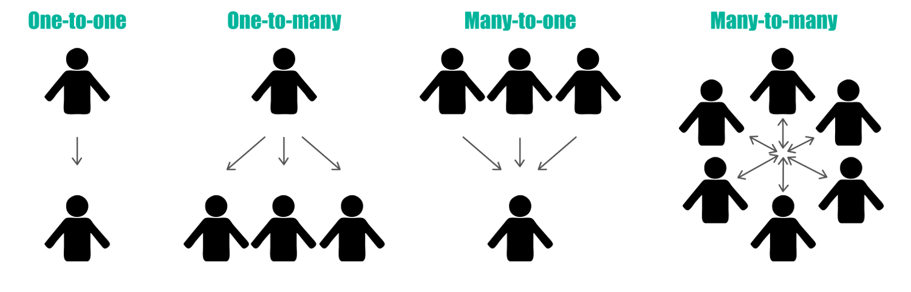
Voyons comment les implémenter avec JPA.
Relations OneToOne unidirectionnel
Les clés étrangères définies entre deux tables peuvent être gérées côté Java avec la mise en place de relations.
@Entity
public class Vehicule {
...
@OneToOne
@JoinColumn(name = "contrat_id", nullable = false)
//Le nullable = false est nécessaire si la FK a été
//définie en NOT NULL. Sinon on peut l'enlever.
private ContratAssurance contrat;
}
@Entity
public class ContratAssurance {
...
}
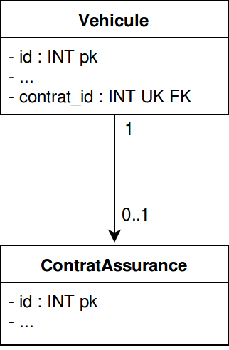
Dans cet exemple, il ne peut pas exister de contrat d'assurance sans véhicule. La relation est unidirectionnelle.
Relations OneToOne bidirectionnel
Il est parfois nécessaire de pouvoir naviguer dans l'autre sens dans une relation OneToOne, on parle de relation bidirectionnelle.
@Entity
public class Vehicule {
...
@OneToOne
@JoinColumn(name = "contrat_id", nullable = false)
//Le nullable = false est nécessaire si la FK a été
//définie en NOT NULL. Sinon on peut l'enlever.
private ContratAssurance contrat;
}
@Entity
public class ContratAssurance {
...
@OneToOne( mappedBy = "contrat" )
private Vehicule vehicule;
}
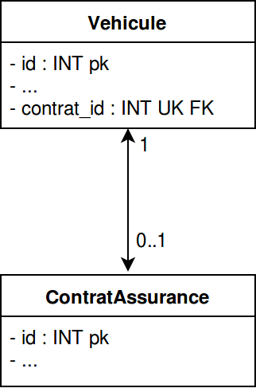
A noter qu'il n'y a aucune différence côté SQL. La définition de la table reste la même.
Relations OneToMany unidirectionnel
Une autre possibilité est la relation OneToMany (ou ManyToOne) symbolisant une composition ou une agrégation.
@Entity
public class Vehicule {
...
@OneToMany
@JoinColumn( name = "vehicule_id")
private List<Entretien> entretiens;
}
@Entity
public class Entretien {
...
}
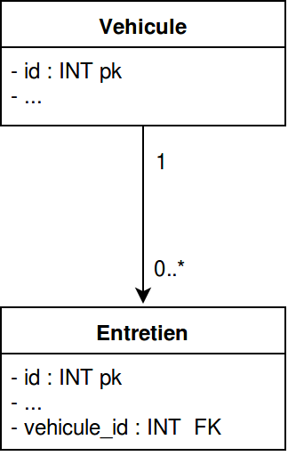
Ici, un entretien est forcément rattaché à un véhicule mais l'inverse n'est pas vrai. La relation est unidirectionnelle, on ne peut pas retrouver le véhicule à partir de l'entretien.
Relations OneToMany bidirectionnel
On peut compléter le mapping pour faire en sorte que la relation soit birectionnelle.
@Entity
public class Vehicule {
...
@OneToMany( mappedBy = "vehicule" )
private List<Entretien> entretiens;
}
@Entity
public class Entretien {
...
@ManyToOne
@JoinColumn( name = "vehicule_id" )
private Vehicule vehicule;
}
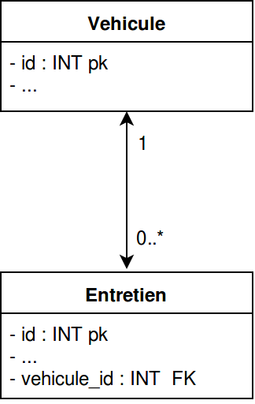
On peut accéder au véhicule directement à partir de l'entretien. A noter qu'aucune modification au niveau SQL n'a été effectuée par rapport à l'exemple précédent.
Relations ManyToMany
Pour modéliser une relation ou les cardinalités entre deux classes sont N et N, on utilise ManyToMany.
@Entity
public class Vehicule {
...
@ManyToMany(mappedBy = "vehicules")
private List<Proprietaire> proprietaires;
}
@Entity
public class Proprietaire {
...
@ManyToMany
@JoinTable(name = "Vehicules_Proprietaires",
joinColumns = @JoinColumn(name = "proprietaire_id"),
inverseJoinColumns = @JoinColumn(name = "vehicule_id")
)
private List<Vehicule> vehicules;
}
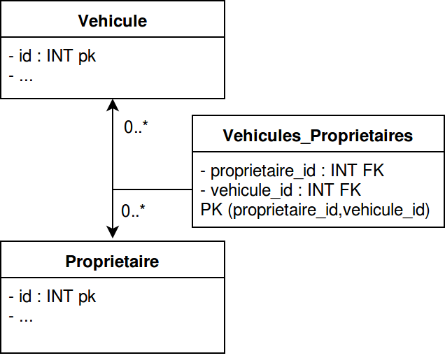
Une table d'association doit exister pour représenter une relation ManyToMany. Cette table n'est pas modélisée directement à l'aide d'une classe Java mais bien dans l'annotation ManyToMany.
Héritage
Il est nécessaire de paramétrer correctement les entités afin de tirer parti au maximum des fonctionnalités de l'héritage.
- Mapped superclass
- Table per class
- Single table
- Joined
Voyons ce qu'implique le choix de telle ou telle stratégie.
Mapped Superclass
La mapped superclass stratégie est l'approche la plus simple. Cela map chaque classe concrète avec sa propre table.
@MappedSuperclass
public abstract class Publication {
@Id
@GeneratedValue(strategy = GenerationType.IDENTITY)
protected Long id;
protected String title;
private int version;
private Date publishingDate;
}
@Entity
public class Book extends Publication {
private int pages;
}
@Entity
public class BlogPost extends Publication {
private String url;
}
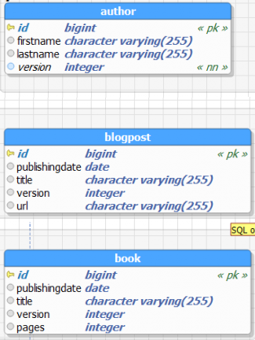
Le gros inconvénient est que la superclasse n'est pas une entité, il n'est donc pas possible de profiter du polymorphisme.
Table Per Class
La stratégie Table Per Class est similaire à la stratégie précédente si ce n'est que la super-classe est maintenant une entité.
@Entity
@Inheritance(strategy = InheritanceType.TABLE_PER_CLASS)
public abstract class Publication {
@Id @GeneratedValue(strategy = GenerationType.IDENTITY)
protected Long id;
protected String title;
private int version;
@ManyToMany @JoinTable(name = "PublicationAuthor"...)
private Set authors = new HashSet();
private Date publishingDate;
}
@Entity
public class Book extends Publication {
private int pages;
}
@Entity
public class BlogPost extends Publication {
private String url;
}
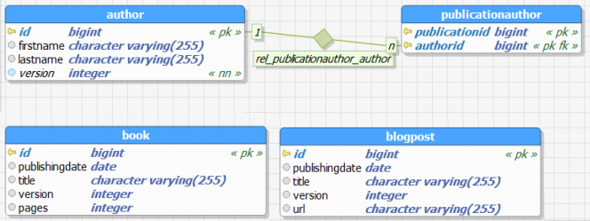
Ici, il est possible de requêter les publications de manière globales et de définir des relations avec
Publication.
Single Table
La stratégie Single Table map l'ensemble des entités dans une seule table ce qui est très performant mais pas sans inconvénients.
@Entity @Inheritance(strategy = InheritanceType.SINGLE_TABLE)
@DiscriminatorColumn(name = "Publication_Type")
public abstract class Publication {
@Id @GeneratedValue(strategy = GenerationType.IDENTITY)
protected Long id;
protected String title;
private int version;
@ManyToMany @JoinTable(name = "PublicationAuthor"...)
private Set authors = new HashSet();
private Date publishingDate;
}
@Entity @DiscriminatorValue("Book")
public class Book extends Publication {
private int pages;
}
@Entity @DiscriminatorValue("Blog")
public class BlogPost extends Publication {
private String url;
}
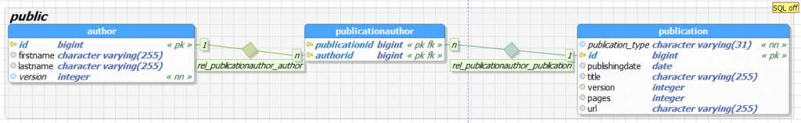
Il est ainsi impossible de gérer de contraintes de non nullité sur un attribut en particulier.
Joined
La stratégie Joined map ressemble à la stratégie Table per class mais la superclasse abstraite possède sa propre table.
@Entity
@Inheritance(strategy = InheritanceType.JOINED)
public abstract class Publication {
@Id @GeneratedValue(strategy = GenerationType.IDENTITY)
protected Long id;
protected String title;
private int version;
@ManyToMany
@JoinTable(name = "PublicationAuthor"...)
private Set authors = new HashSet();
private Date publishingDate;
}
@Entity
public class Book extends Publication {
private int pages;
}
@Entity
public class BlogPost extends Publication {
private String url;
}
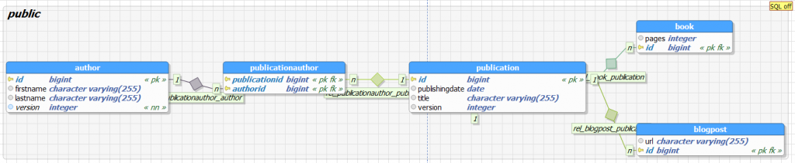
Les tables sont plus petites car elles ne contiennent que les colonnes spécifiques et une clé primaire commune à la super-classe.